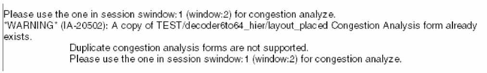

Uses of the Congestion Analysis Assistant
Use the Congestion Analysis assistant to:
- run global routing and congestion analysis.
- illustrate the various methods of viewing congestion in your design.
- analyze congestion.
The Congestion Analysis assistant has only one record per cellview. If you attempt to open another instance of the Congestion Analysis assistant for a cellview that already has a copy of congestion analysis record, a warning message is displayed, as shown below.

The copied ones only display the synchronized heat map, but the Congestion Analysis assistant is not displayed.
Related Topics
Environment Setup for Congestion Analysis
Loading the Congestion Analysis Workspace
Running Global Routing and Congestion Analysis
Return to top